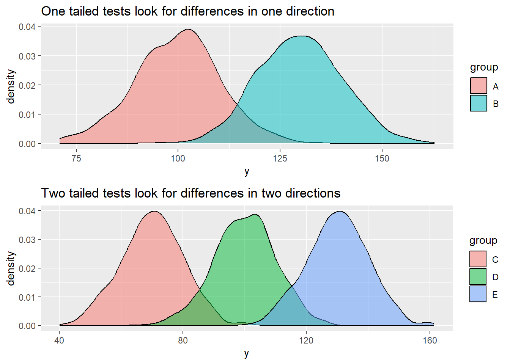
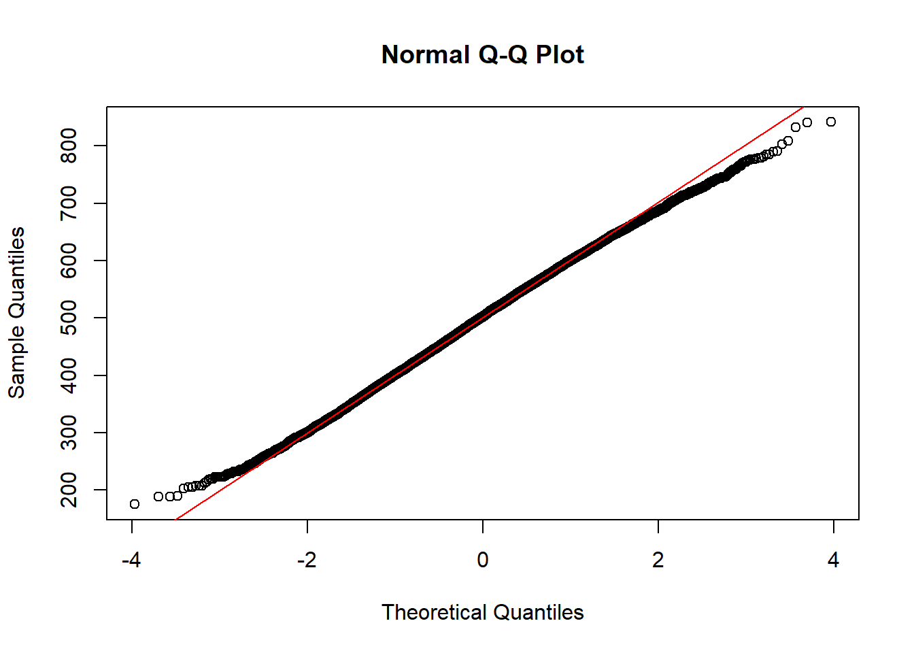

T-tests are statistical tests that determine if there are statistically significant differences between the means of two groups. Consider the data giving the results of girls and boys on a test:
Boys’ scores
Boy
Score (/10)
A
7
B
8
C
6
D
5
E
8
Mean
6.8
Girls’ scores
Girls
Score (/10)
A
9
B
4
C
7
D
8
E
8
Mean
7.2
The means of the two groups are different (6.8 for boys and 7.2 for girls) but the difference may simply be due to random variation. A t-test can report the probability that a difference is means is due to chance.
Welch Two Sample t-test
data: Boys$Score and Girls$Score
t = -0.3849, df = 7.035, p-value = 0.7117
alternative hypothesis: true difference in means is not equal to 0
95 percent confidence interval:
-2.854915 2.054915
sample estimates:
mean of x mean of y
6.8 7.2
The t.test function returns a p-value greater than 0.05 so the mean test-results can be assumed to the result of chance, and we conclude there are no detectable differences by gender for this data set.
To take another example consider the random distribution of 10,000 boys and 10,000 girls scores on a mathematics tests below - the means are represented by dotted lines:
show the code
# Create random data sets of 10,000 boys' and girls' scoresgirlscores <-as.data.frame(rnorm(n=10000, mean=100, sd=10))girlscores <- girlscores %>%mutate(gender="female") %>%rename(Scores="rnorm(n = 10000, mean = 100, sd = 10)")boysscores <-as.data.frame(rnorm(n=10000, mean=105, sd=10))boysscores <- boysscores %>%mutate(gender="male") %>%rename(Scores="rnorm(n = 10000, mean = 105, sd = 10)")# Plot the datatotalscores<-rbind(boysscores, girlscores)ggplot(totalscores) +geom_histogram(data=boysscores,aes(x=Scores, fill=gender, alpha=0.5), binwidth =1) +geom_histogram(data=girlscores,aes(x=Scores, fill=gender, alpha=0.5), binwidth =1) +geom_vline(xintercept=mean(boysscores$Scores), colour="turquoise4", linetype=3)+# Add a vertical line for the mean scoresgeom_vline(xintercept=mean(girlscores$Scores), colour="red2", linetype=3) +geom_segment(aes(x=mean(boysscores$Scores), y=440, # Add an arrow between meansxend=mean(girlscores$Scores),yend=440), arrow =arrow(length =unit(0.01, "npc"), ends ="both")) +geom_text(x=125, y=440, label="Difference in means") +# Add text labelxlab("score") +ylab("Numer of students") +guides(alpha="none") # Remove alpha from the legend

Visually, it looks like there might be a difference in means (but we can’t be sure at this point). We can calculate the means.
mean(girlscores$Scores)
[1] 99.89479
mean(boysscores$Scores)
[1] 105.075
The means are different but, by inspection, it is not possible to tell if the difference in means is statistically significant. To find that out we need to perform a t-test.
t.test(girlscores$Scores,boysscores$Scores)
Welch Two Sample t-test
data: girlscores$Scores and boysscores$Scores
t = -36.65, df = 19992, p-value < 2.2e-16
alternative hypothesis: true difference in means is not equal to 0
95 percent confidence interval:
-5.457268 -4.903177
sample estimates:
mean of x mean of y
99.89479 105.07501
The test returns a p-value which we can use to make a conclusion. A p-value reports, assuming that there is no difference in the means of the two groups, what is the probability of getting a difference in means at least as big as the one we observe. Conventionally, we use 0.05 (1 in 20) as the cut off for statistical significance (a convention that has been much critiqued e.g. (Cohen 1994; Baker 2016)).
In the case above, the p-value of the t-test is less than 0.05 (p-value < 2.2e-16) so we can assume that the means of the boys and girls scores are different to a statistically significant degree.
2.1 Types of t-test
There are a number of types of t-tests:
One-tailed test - checks if the mean of one group is different in one direction (e.g. are one set of scores only higher than the other).
Two-tailed tests - checks if the means are different in two directions - (i.e. are tests scores of one group higher or lower than the other).
Paired tests - compares the means of measurements from the same individual or object (e.g. in a pre- and post-test - the comparison of means and before and after scores compares the same student’s scores in the first test with the second).
Unpaired t-tests - compares the means of two unrelated groups (for example, are the mean science scores of boys and girls in a school different).
For more information on t-tests, see chapter 13, in Navaro’s Learning Statistics with R.
2.2 Assumptions of t-tests
There are four assumptions that need to be met by data set for a t-test to be applicable: a) the data are continuous; b) the sample was randomly sampled; c) The variance of the data in each group is similar (homogeneity of variance); d) The data are approximately normally distributed.
Note
A rule of thumb researchers use is that if the ratio of variances of the larger sample to the smaller is less than 4, then a t-test can be used.
2.3 Normality checking
To check for normality we can use a number of different tests and approaches. For data sets that include more than 5000 observations (as is often the case with those sampled from the PISA data) then qqplots the Kolmogorov-Smirnov test are good approaches. Histograms can also be used to help visualise the data and compare with the normal distribution. We can use these different approaches to answer the question:
Are the PISA reading scores in the UK normally distributed?
Quantiles are sections of data, for example a type of quantile is a quartile, a section of data containing a quarter of the data points, a quintile contains 20% of the data and so on. A quintile-quantile plot, plots the quantiles of two distributions against each other. If the distributions are the same, a straight line is formed. Below, we produce a quintile-quantile plot (or qq-plot) for reading scores in the UK.
# Create a UK reading subsetPISAUKRead <- PISA_2018 %>%select(CNT, PV1READ) %>%filter(CNT=="United Kingdom")# Perform a qqplotqqnorm(PISAUKRead$PV1READ)# If data are normally distributed, a qq plot should be a straight line.# To assist judgement, you can add a straight line with:qqline(PISAUKRead$PV1READ, col="red")

# The data in this case look normal.
The qqplot gives a good straight line so we can conclude that the data are normally distributed.
A non-graphical approach to normality testing is the Kolmogorov-Smirnov Test test. The package dgof contains ks.test which tests for normality. The test is carried out by passing the data to ks.test(PISA_2018$PV1READ, "pnorm", mean=mean(PISA_2018$PV1READ), sd=sd(PISA_2018$PV1READ)). "pnorm" sets the test to testing for normality (ks.test can test for different distributions). We also pass the function the mean (mean) and standard deviation (sd) of our data set. If the p-value is above 0.05, the data are normally distributed (or parametric).
# the Kolmogorov-Smirnov Testlibrary(dgof)# Create a UK reading subsetPISAUKRead<-PISA_2018%>%select(CNT, PV1READ)%>%filter(CNT=="United Kingdom")ks.test(PISAUKRead$PV1READ, "pnorm", mean=mean(PISAUKRead$PV1READ), sd=sd(PISAUKRead$PV1READ))
One-sample Kolmogorov-Smirnov test
data: PISAUKRead$PV1READ
D = 0.01386, p-value = 0.009895
alternative hypothesis: two-sided
# The p-value is less than 0.05, assume the data are not normally distributed
Warning
The usefulness of normality tests is contested - for large samples, tests like the Kolmogorov-Smirnov test can return values below 0.05 (i.e. report that the data are not normal), for very small deviations from the normal (Hanna and Dempster 2013). Normality tests may be a useful backup, for small samples, if the qqplot is hard to interpret but, with the large samples typical in the PISA data, may give contradictory outcomes to the two visual tests.
Finally, a third approach, which is harder to judge, is to plot a histogram and to examine it for the normal shape.
# Create a UK reading subsetPISAUKRead <- PISA_2018 %>%select(CNT, PV1READ) %>%filter(CNT=="United Kingdom")# Plot a histogramggplot(data=PISAUKRead,aes(x=PV1READ)) +geom_histogram(binwidth =5, fill="darkseagreen4")
# from the histrogram, the data look normally distributed
2.4 Checking for Equal Variances
The second assumption of a test is that the samples have equal variance. Variance describes the spread of the data (standard deviation is the square root of variance).
To check for equal variances, we can divide the variance of one sample by the other sample. A rule of thumb researchers use is that if the ratio of variances of the larger sample to the smaller is less than four, then a t-test can be used (Boneau 1960). R will check this for you, and if they are unequal, will use the test for unequal variances (Welch’s test).
To check for the ratio of variance, we can use the var function, and calculate the ratio of the sample. We add na.rm=TRUE to the var function to omit NA values. For example, determine the ratio of girls’ and boys’ reading scores in the UK.
# Create a UK reading subset for boysPISAUKReadM <- PISA_2018 %>%select(CNT, PV1READ,ST004D01T) %>%filter(CNT=="United Kingdom"|ST004D01T=="Male")# Create a UK reading subset for girlsPISAUKReadF <- PISA_2018 %>%select(CNT, PV1READ,ST004D01T) %>%filter(CNT=="United Kingdom"|ST004D01T=="Female")# Find the varianceMVar <-var(PISAUKReadM$PV1READ, na.rm =TRUE)FVar <-var(PISAUKReadF$PV1READ, na.rm=TRUE)MVar/FVar
[1] 1.150343
The ratio of variances is 1.15 so the samples meet the variance criterion for t-tests.
Note
Checking and Filtering for Outliers
Often, we need to check and filter for outliers in the data. There are many ways to do this, depending on the distribution of the data and how extreme the outliers are that we want to remove. A good rule of thumb is the median +/- 1.5 times the interquartile range (IQR), where the IQR is the upper quartile - lower quartile. If the data is normally distributed, then the mean +/- 1.5 time the standard deviation (sd) can be used. If we only want to remove more extreme outliers, then 2 or even 3 times the IQR (or sd) from the median (or mean) can be used instead.
Once we have determined the upper and lower bound of our outliers, we can remove any data points that lie outside of this and then perform our statistical test on the data.
# Create a subset of UK math scoresUKPISAmath <- PISA_2018 %>%select(CNT, PV1MATH) %>%filter(CNT=="United Kingdom")# Test for normality in current formks.test(UKPISAmath$PV1MATH, "pnorm", mean=mean(UKPISAmath$PV1MATH), sd=sd(UKPISAmath$PV1MATH))# p-value = 0.04783 - only just normal# Calculate value of scores at 1.5 x sd above and below the meanoutl_h_b<-mean(PISA_2018$PV1MATH, na.rm=TRUE) +1.5*sd(PISA_2018$PV1MATH, na.rm=TRUE)outl_l_b<-mean(PISA_2018$PV1MATH, na.rm=TRUE) -1.5*sd(PISA_2018$PV1MATH, na.rm=TRUE)# Filter values that are 1.5 x sd above and below the meanUKPISAmath <- UKPISAmath %>%filter(PV1MATH > outl_l_b & PV1MATH < outl_h_b)# Test for normality againks.test(UKPISAmath$PV1MATH, "pnorm", mean=mean(UKPISAmath$PV1MATH), sd=sd(UKPISAmath$PV1MATH))# p-value now < 2.2e-16 - a much more normal distribution
3 Performing t-tests
To perform a t.test in R you use the t.test function. You need to pass the function the data set you want to test (data=USMath), and specify the groups to be compared (PV1MATH ~ ST004D01T) - here comparing the means of the mathematics scores (PV1AMTH) by the gender variable (ST004D01T). You can then specify if the test is two sided (alternative = "two.sided"), and the type of test (paired = FALSE - i.e. this is an unpaired test). For example, to determine if there are statistically significant differences in boys and girls maths scores in the United States:
# Create a UK reading subsetUSMATH<-PISA_2018%>%select(CNT, PV1MATH,ST004D01T)%>%filter(CNT=="United States")# Plot a two-sided, unpaired t-testt.test(PV1MATH ~ ST004D01T, data = USMATH, paired =FALSE, alternative ="two.sided")
Welch Two Sample t-test
data: PV1MATH by ST004D01T
t = -2.6529, df = 4832.8, p-value = 0.008006
alternative hypothesis: true difference in means between group Female and group Male is not equal to 0
95 percent confidence interval:
-12.145264 -1.823039
sample estimates:
mean in group Female mean in group Male
469.5886 476.5727
::: call-out note Types of t-test To set whether the t.test in R is one-tailed or two-tailed you can set the function alternative in t.test to “greater”, “less” or “two.sided”. To set the test as paired or unpaired, you can set the paired variable to TRUE or FALSE.
# Create a UK reading subsetUKSci<-PISA_2018%>%select(CNT, PV1SCIE,ST004D01T)%>%filter(CNT=="United Kingdom")# Plot a two-sided, unpaired t-testt.test(PV1SCIE ~ ST004D01T, data = UKSci, paired =FALSE, alternative ="two.sided")
Welch Two Sample t-test
data: PV1SCIE by ST004D01T
t = 1.5274, df = 13662, p-value = 0.1267
alternative hypothesis: true difference in means between group Female and group Male is not equal to 0
95 percent confidence interval:
-0.6983756 5.6282103
sample estimates:
mean in group Female mean in group Male
496.4626 493.9977
:::
4 Interpreting the output of t-tests
To interpret the outcome of the test, the key value is the p-value (in this case, p-value = 0.008006). As the p-value is <0.05 we can conclude that there are significant differences between boys’ and girls’ mean mathematics scores in the US.
5 Anova (multiple t-tests)
We have performed t-tests of the difference in mathematics scores between boys and girls in the UK. We may now want to perform the same t-test for all the countries in the sample. This can create a problem. Remember that a p-value report the probability that an outcome is due to chance. The more times we repeat a t-test, the more likely we are to see an effect, even when none-exists.
To avoid potential artefacts from doing multiple t-tests, when we want to compate the means of more than two groups, we use an anova (anlaysis of variance) test.
To determine if there is a statistically significant difference between groups we run an anova calculation, using the aov function in R. The dependent variable is the one we are interested in explaining, the independent variables are the factors we think might explain the variance.
For example, we used t-tests to look at differences in scores between a pair of countries (e.g the UK and the US). We can now compare across all the countires.
We pass the function the data we wish to focus on (PV1MATH) and then indicate we wish to look for variation in the PV1MATH, by CNT. We then summarise the result to get a table.
Df Sum Sq Mean Sq F value Pr(>F)
CNT 78 1.737e+09 22271292 2774 <2e-16 ***
Residuals 606548 4.870e+09 8028
---
Signif. codes: 0 '***' 0.001 '**' 0.01 '*' 0.05 '.' 0.1 ' ' 1
5377 observations deleted due to missingness
The resulting table has two rows: CNT residuals. The aov function looks to determine if there is a difference in the variance across countires. After determining any variation from those two variables, any remaining variation is associated with residuals - you can think of this as the unexplained variation that isn’t associated with the vectors we specified (i.e. the country).
First, look at the Pr(>F) column. This is a test of significance and reports if the groups in that row show statistically significant variation. In our case, country returns Pr(>F) <2e-16 *** - which is over 0.05. This suggests there are significant differences across countries.
This is not terribly interesting so far(!) - but we can do two post-hoc tests (i.e. tests after the first test, to find out the effect size and between which countries differences exist)
5.1 Eta-squared
Now knowing that there are significant differences between the two class groups, we can next determine how much variation in the test score is explained by class. To do this we calculate a variable called eta-squared.
Eta-squared gives the proportion of variance explained by each variable. The eta squared function is in the package lsr so we will install lsr, and then use the result of our anova (resaov) to calculate the eta squared variable using the function etaSquared. To report the value of eta as a percentage we need to multiply the output of eta by 100.
Eta squared tells us the proportion of the total variance that is explained by a variable (you can also think of it as an effect size). An eta squared value of 1 indicates all the variance of a sample is explain by some variable and 0 means the variable is not responsible for any of the observed variance. We can multiply the eta-squared score by 100 to get a value for the percentage of variance explained.
The percentage of variance explained is a useful figure. For example, it has been reported that schools only account for 14% of the variance in progress 8 scores, whilst family explains 43% (Wilkinson, Bryson, and Stokes (2018)).
The important column here is the eta.sq column - it tells us that the country explains 26% of the variance in test scores. (The second column contains information about partial eta-squared, which we won’t go into, but are used when the results of each measure are not independent i.e. one result influences another).
Note
As a rule of thumb, a percentage variance explained of 1% is considered small, 6% medium and 14% and more large
5.2 Tukey’s HSD
When an anova test reports that are some statistically significant differences between groups, it does not imply there are statistically significant differences between all subgroups. For example, if the anova reports statistically significant differences by age, statistically significant differences might exist between 11, 12 and 13-year old students, but not between 13 and 14-year olds.
We can use an additional anova test, Tukey’s Honest Significant Difference test (or Tukey’s HSD for short), to find out which pairs of subgroups have statistically significant differences in means.
Consider the question: Are there statistically significant differences in the variance of science scores of the UK, US, France and Germany? To determine if such differences exist, we create a new subset for those countries’ science scores, and then run an anova test by country, reporting the eta squared value.
The anova results tell us there are significant differences between the countries, which account for 0.4% of variance in scores. We can then run a Tukey HSD test to determine which countries have significant differences between mean scores.
TukeyHSD(resaov)
Tukey multiple comparisons of means
95% family-wise confidence level
Fit: aov(formula = PV1SCIE ~ CNT, data = PISAMULTI)
$CNT
diff lwr upr p adj
France-Germany -18.844787 -23.489214 -14.200359 0.0000000
United Kingdom-Germany -9.056104 -13.073086 -5.039123 0.0000000
United States-Germany -7.024614 -11.985354 -2.063874 0.0015665
[ reached getOption("max.print") -- omitted 3 rows ]
From that we get a table with p values (p adj) for different pairs of countries. Note that these are below 0.005 for all pairs of countries, except the US and the UK. So we can conclude there are significant differences in science scores between all countries except the UK and the US.
6 Seminar Tasks
6.1 Task 1 Choice of tests
Consider the following scenarios. Which (if any) of the t-tests would be most of appropriate, including whether it would be a one or two tailed test.
Note
One and two-tailed tests
Remember that a one-tailed test only looks for differences in one direction from the mean (for example, that one sample has a higher mean than the other). A two-tailed tests tests for the possibility of the means of the two groups being higher or lower than each other.
An educational researcher wants to test a teaching approach with a group of 12 students to see if an intervention increases performance in their year 6 SATs results. Pupils are given a SATS paper before the intervention and again after. The results of these are normalised and then compared.
A teacher wants to see if their pupils’ GCSE computer science test scores are in line with the national average or not. The tests are out of 180 marks.
The DfE want to compare uptake of STEM subjects pre and post pandemic to see if there has been any change in the percentage of students studying at least one STEM subject for A level.
A school wants to compare salaries of staff between this academic year and last academic year to see whether there has been a significant increase.
The same school as in d) wants to compare salaries of support staff and teaching staff to see if there is a significant difference.
A researcher wants to find out how much time pupils spend looking at screens during lesson time, to see if there is a difference between year 7 and year 10 students. 10 pupils in year 7 and 10 pupils in year 10 are randomly selected across a school and observed throughout a school day in November. The times are recorded to the nearest minute.
A business manager wants to check if the financial expenditure on STEM teachers per year is similar to the national average (based on average numbers of pupils on role)
Answer
# Answers# a) An educational researcher wants to test a teaching approach with a group of 12 students to see if an intervention increases performance in their year 6 SATs results. Pupils are given a SATS paper before the intervention and again after. The results of these are normalised and then compared.# Paired (because we compare pairs of results (before and after) for the same student) and two-tailed (because we are interested in the means being higher or lower)# b) A teacher wants to see if their pupils' GCSE computer science test scores are in line with the national average or not. The tests are out of 180 marks.# Unpaired (the teacher compares their students with another pool) and two-tailed (because we are interested in the means being higher or lower)# c) The DfE want to compare uptake of STEM subjects pre and post pandemic to see if there has been any change in the percentage of students studying at least one STEM subject for A level.# Unpaired (the students taking STEM subjects before and after the pandemic will be different individuals from different cohorts) and two-tailed (because we are interested in the means being higher or lower)# d) A school wants to compare salaries of staff between this academic year and last academic year to see whether there has been a significant increase.# Possibly paired (if the staff body has remained the same), and two-tailed (because we are interested in the means being higher or lower)# e) The same school as in d) wants to compare salaries of support staff and teaching staff to see if there is a significant difference.# Unpaired (because there are two different groups, teachers and support staff), and two-tailed (because we are interested in the mean salaries being higher or lower)# f) A researcher wants to find out how much time pupils spend looking at screens during lesson time, to see if there is a difference between year 7 and year 10 students. 10 pupils in year 7 and 10 pupils in year 10 are randomly selected across a school and observed throughout a school day in November. The times are recorded to the nearest minute.# Unpaired (because there are two different groups, Y7 and Y10), and two-tailed (because we are interested in the means of times being higher or lower)# g) A business manager wants to check if the financial expenditure on STEM teachers per year is similar to the national average (based on average numbers of pupils on role)# Unpaired (because there are two different groups, the school and the national cohort), and two-tailed (because we are interested in the expenditure means being higher or lower)
6.2 Task 2 Normality Checking
Determine if the following subsets of PISA data are normal (you will need to use select and filter). Try to use all three methods of normality checking (a) qqplots, b) the Kolmogorov-Smirnov test, c) histogram plotting, to reach your conclusion
Are the following data normally distributed: a) PV1MATH scores in the UK; b) PV1MATH scores in Malta; c) Students in the UK who score more than 750 on their science test.
Answer
# a) PV1MATH scores in the UK# Create UK Math subsetUKMath<-PISA_2018%>%select(CNT, PV1MATH)%>%filter(CNT=="United Kingdom")# Perform a qqplotqqnorm(UKMath$PV1MATH)# If data are normally distributed, a qq plot should be a straight line.# To assist judgement, you can add a straight line with:qqline(UKMath$PV1MATH, col="red")# The data in this case look normal.# Perform the KS testks.test(UKMath$PV1MATH, "pnorm", mean=mean(UKMath$PV1MATH), sd=sd(UKMath$PV1MATH))# The p-value is 0.04783, less than 0.05, implying the data are not normal, but recall the over sensitivity of the test.# Plot a histogramggplot(data=UKMath,aes(x=PV1MATH))+geom_histogram(binwidth =5, fill="darkseagreen4")# The data in this case look normal.# b) PV1MATH scores in Malta# Create Malta Math subsetMalMath<-PISA_2018%>%select(CNT, PV1MATH)%>%filter(CNT=="Malta")# Perform a qqplotqqnorm(MalMath$PV1MATH)# If data are normally distributed, a qq plot should be a straight line.# To assist judgement, you can add a straight line with:qqline(MalMath$PV1MATH, col="red")# The data in this case look normal.# Perform the KS testks.test(MalMath$PV1MATH, "pnorm", mean=mean(MalMath$PV1MATH), sd=sd(MalMath$PV1MATH))# The p-value, 0.03173, less than 0.05, implying the data are not normally distributed, but recall the over sensitivity of the test.# Plot a histogramggplot(data=MalMath,aes(x=PV1MATH))+geom_histogram(binwidth =5, fill="darkseagreen4")# The data in this case look normal.# c) UK science high achievers# Create a UK over 750 Science score subsetUKHighSci<-PISA_2018%>%select(CNT, PV1SCIE)%>%filter(CNT=="United Kingdom"& PV1SCIE>750)# Perform a qqplotqqnorm(UKHighSci$PV1SCIE)# If data are normally distributed, a qq plot should be a straight line.# To assist judgement, you can add a straight line with:qqline(UKHighSci$PV1SCIE, col="red")# I am not entirely convinced from the line!# Perform the KS testks.test(UKHighSci$PV1SCIE, "pnorm", mean=mean(UKHighSci$PV1SCIE), sd=sd(UKHighSci$PV1SCIE))# The p-value is 0.7683 more than 0.05, so we can assume the scores are not normal# Plot a histogramggplot(data=UKHighSci,aes(x=PV1SCIE))+geom_histogram(binwidth =5, fill="darkseagreen4")# The data don't look normal here
6.3 Task 3 Variance checking
Determine if the variance of these samples meets the criteria to carry out a t-test: a) Boys and Girls maths scores in the UK b) Reading scores in the US and the UK c) Wealth scores of boys and girls in the US
Tip
Recall, the rule of thumb researchers use is that if the ratio of variances of the larger sample to the smaller is less than four, then a t-test can be used (Boneau 1960)
Answer
# a)# Create a UK maths subset for boysPISAUKMATHM<-PISA_2018%>%select(CNT, PV1MATH,ST004D01T)%>%filter(CNT=="United Kingdom"|ST004D01T=="Male")# Create a UK reading subset for girlsPISAUKMATHF<-PISA_2018%>%select(CNT, PV1MATH,ST004D01T)%>%filter(CNT=="United Kingdom"|ST004D01T=="Female")# Find the varianceMVar<-var(PISAUKMATHM$PV1MATH, na.rm =TRUE)FVar<-var(PISAUKMATHF$PV1MATH, na.rm=TRUE)MVar/FVar
[1] 1.132708
Answer
# The ratio of variance is 1.132708 so a t-test can be performed# b)# Create a US reading score dataframeUSREAD<-PISA_2018%>%select(CNT, PV1READ)%>%filter(CNT=="United States")# Create a UK reading score dataframeUKREAD<-PISA_2018%>%select(CNT, PV1READ)%>%filter(CNT=="United Kingdom")# Find the varianceUKVar<-var(UKREAD$PV1READ, na.rm =TRUE)USVar<-var(USREAD$PV1READ, na.rm=TRUE)UKVar/USVar
[1] 0.8133229
Answer
# The ratio of variance is 0.813 so a t-test can be performed# c)# Create a US Male Wealth dataframeUSWEALTHM<-PISA_2018%>%select(CNT, WEALTH, ST004D01T)%>%filter(CNT=="United States"|ST004D01T=="Male")# Create a US Female Wealth dataframeUSWEALTHF<-PISA_2018%>%select(CNT, WEALTH, ST004D01T)%>%filter(CNT=="United States"|ST004D01T=="Female")# Find the varianceMVar<-var(USWEALTHM$WEALTH, na.rm =TRUE)FVar<-var(USWEALTHF$WEALTH, na.rm=TRUE)MVar/FVar
[1] 1.05469
Answer
# The ratio of variance is 1.05469 so a t-test can be performed
6.4 Task 4 Performing t-tests
Use the PISA dataset and the gender ST004D01T and PV1MATH (Math score) variables to perform a two-sided, unpaired t-test to determine if boys and girls perform differently on the test in the UK. Before performing the test, check for the normality of the data, and check for equal variance.
Choose a different country of interest to compare performance in males and females in that country
Answer
# Are there differences between the mean scores of boys and girls in China PISA mathematics?## Select the gender (ST004D01T) and math score columns (PV1MATH)# Filter the data to select UK responsesMaleChina <- PISA_2018 %>%select(CNT,ST004D01T, PV1MATH) %>%filter(CNT=='B-S-J-Z (China)', ST004D01T=='Male')FemaleChina<-PISA_2018 %>%select(CNT,ST004D01T, PV1MATH) %>%filter(CNT=='B-S-J-Z (China)', ST004D01T=='Female')# The conditions to do a t-test include that the data are normally distributedqqnorm(MaleChina$PV1MATH)qqline(MaleChina$PV1MATH, col="red")qqnorm(FemaleChina$PV1MATH)qqline(FemaleChina$PV1MATH, col="red")# The plots produces relatively straight lines so the distributions can be # assumed to be normal## We will then check the variances of the two data setsVarM<-var(MaleChina$PV1MATH, na.rm=TRUE)VarF<-var(FemaleChina$PV1MATH, na.rm=TRUE)VarM/VarF# The variance ratio is close to 1 (1.17)# So our two conditions are met and can we can perform the t-test# Create a UK Math subsetCHIMATH<-PISA_2018%>%select(CNT, PV1MATH,ST004D01T)%>%filter(CNT=="B-S-J-Z (China)")# Plot a two-sided, unpaired t-testt.test(PV1MATH ~ ST004D01T, data = CHIMATH, paired =FALSE, alternative ="two.sided")# The p-value is <0.05 (2.414e-07) suggesting there are statistically# differences between boys and girls in mathematics in China
Now try to compare the performance of males and females in Maths in all the OECD countries in the PISA dataset. You may need to think about how to do this using R without repeating the test for each country.
Answer
MaleOECD <- PISA_2018 %>%select(OECD, ST004D01T, PV1MATH) %>%filter(OECD=='Yes', ST004D01T=='Male')FemaleOECD <- PISA_2018 %>%select(OECD, ST004D01T, PV1MATH) %>%filter(OECD=='Yes', ST004D01T=='Female')qqnorm(MaleOECD$PV1MATH)qqline(MaleOECD$PV1MATH, col="red")qqnorm(FemaleOECD$PV1MATH)qqline(FemaleOECD$PV1MATH, col="red")# The plots produces relatively straight lines so the distributions can be assumed to be normal# We will then check the variances of the two data setsVarM <-var(MaleOECD$PV1MATH, na.rm=TRUE)VarF <-var(FemaleOECD$PV1MATH, na.rm=TRUE)VarM / VarF# The variance ratio is close to 1 (1.1)# So our two conditions are met and can we can perform the t-test# The p-value is <0.05 (2.2e-16) suggesting there are statistically# differences between boys and girlsOECD <- PISA_2018 %>%select(OECD, ST004D01T, PV1MATH) %>%filter(OECD=='Yes')t.test(PV1MATH ~ ST004D01T, data = OECD, paired =FALSE, alternative ="two.sided")
Are there statistically significant differences in mean wealth scores of boys and girls in the UK?
Answer
MaleUK <- PISA_2018 %>%select(ST004D01T, WEALTH) %>%filter(ST004D01T=='Male')FemaleUK <- PISA_2018 %>%select(ST004D01T, WEALTH) %>%filter(ST004D01T=='Female')qqnorm(MaleUK$WEALTH)qqline(MaleUK$WEALTH, col="red")qqnorm(FemaleUK$WEALTH)qqline(FemaleUK$WEALTH, col="red")# The plots here are somewhat skewed which might suggest not performing the test# We will then check the variances of the two data setsVarM <-var(MaleUK$WEALTH, na.rm=TRUE)VarF <-var(FemaleUK$WEALTH, na.rm=TRUE)VarM / VarF# The variance ratio is close to 1 (1.1)# So our two conditions are met and can we can perform the t-testWEALTH <- PISA_2018 %>%select(WEALTH, ST004D01T, CNT) %>%filter(CNT=='United Kingdom')t.test(PV1MATH ~ ST004D01T, data = OECD, paired =FALSE, alternative ="two.sided")# p-value < 2.2e-16 so there are statistically significant differences between boys' and girls' reported wealth in the UK
6.5 Task 5 Multiple t-tests with anova
For the UK, France, Thailand, and the US determine if there are statistically significant differences in variation in mathematics scores.
Tukey multiple comparisons of means
95% family-wise confidence level
Fit: aov(formula = PV1MATH ~ CNT, data = PISAMULTI)
$CNT
diff lwr upr p adj
United Kingdom-France 9.517876 5.818238 13.217513 0
Thailand-France -49.928145 -53.960994 -45.895296 0
United States-France -14.083379 -18.736341 -9.430416 0
[ reached getOption("max.print") -- omitted 3 rows ]
answer
# There are statistically significant differences in mathematics scores for all pairs of countries
For the UK, are there statistically significant differences in reading score by students who attend different types of school (ISCEDO), e.g. Vocational, General etc.
Tukey multiple comparisons of means
95% family-wise confidence level
Fit: aov(formula = PV1READ ~ ISCEDO, data = UKSchRead)
$ISCEDO
diff lwr upr p adj
Pre-Vocational-General -102.78896 -175.284439 -30.29348 0.0025668
Vocational-General -21.40641 -55.251751 12.43893 0.2993528
Vocational-Pre-Vocational 81.38255 1.423372 161.34172 0.0449504
answer
# There are statistically significant differences between Pre-vocational and general, and vocational and pre-vocational, but not between vocational and general.
For the UK, use ifelse on the WEALTH variable to create categories for four quartiles (divide the data into top; upper-mid; lower-mid; and bottom). Use anova to determine between which groups there are statistically significant differences in science scores
Hint: You can use quantiles<-quantile(UKSci$PV1SCIE, prob=c(.25,.5,.75), na.rm=TRUE) to give the values of PV1SCIE that account for 25%, 50% and 75% of the responses.
answer
UKSci<-PISA_2018 %>%select(CNT, PV1SCIE, WEALTH)%>%filter(CNT=="United Kingdom")%>%na.omit()%>%droplevels()%>%select(PV1SCIE, WEALTH)# Find the cut of points for 25%, 50% and 75% (quantiles) of WEALTHquantiles<-quantile(UKSci$WEALTH, prob=c(.25,.5,.75), na.rm=TRUE)UKSci<-UKSci%>%mutate(WEALTH=ifelse(WEALTH<quantiles[1], "Bottom", ifelse(WEALTH<quantiles[2], "Lower-mid",ifelse(WEALTH<quantiles[3], "Upper-mid","Top"))))resaov<-aov(PV1SCIE ~ WEALTH, data=UKSci)sumresaov<-summary(resaov)sumresaov
Df Sum Sq Mean Sq F value Pr(>F)
WEALTH 3 1531216 510405 57.19 <2e-16 ***
Residuals 13363 119258836 8925
---
Signif. codes: 0 '***' 0.001 '**' 0.01 '*' 0.05 '.' 0.1 ' ' 1
# There are statistically significant differences between all groups by wealth
7 Extension and additional reading
7.1 Recreating a paper in R
Looking at the reading Cook (2014), consider the following
Is it possible to replicate the results using the PISA 2018 data set? Make a graph showing the difference in male and female PV1MATH results for each country CNT. To do this we are going to have to:
work out the mean() maths score PV1MATH for each country CNT and gender ST004D01T grouping, call this meanmath and create a new dataframe to store this
from this dataframe, create two new dataframes, one for males only and one for females only
rename() (see ?@sec-renaming) the meanmath score in each dataframe to male_mean and female_mean
bind the dataframes together using using column bind function cbind(<male_df>, <female_df>) and store this in a new dataframe called Mathgendergap. NOTE: cbind only accepts tables with different names, so you’ll need to select select(CNT, male_mean) from the male dataframe and select(female_mean) from the female dataframe.
use mutate (see ?@sec-mutate) to calculate the difference in male and female mean maths scores for each country
The above code doesn’t include the t-test results for each country, to do this we need to run some more complex code, you can see how it works below:
What issues are there with using a t-test for the context given in the paper?
How do your findings from question 3 and the 2018 dataset compare with those in the paper? Are there any differences or disagreements with your findings?
How could the paper be improved?
8 Doing t-tests in R
You can find the code from the video below:
Show the Code
# Introduction to t-tests in R## Download data from /Users/k1765032/Library/CloudStorage/GoogleDrive-richardandrewbrock@gmail.com/.shortcut-targets-by-id/1c3CkaEBOICzepArDfjQUP34W2BYhFjM4/PISR/Data/PISA/subset/Students_2018_RBDP_none_levels.rds# You want the file: Students_2018_RBDP_none_levels.rds# and place in your own file system# change loc to load the data directly. Loading into R might take a few minutesinstall.packages("nortest")library(tidyverse)library(nortest)loc <-"/Users/k1765032/Library/CloudStorage/GoogleDrive-richardandrewbrock@gmail.com/.shortcut-targets-by-id/1c3CkaEBOICzepArDfjQUP34W2BYhFjM4/PISR/Data/PISA/subset/Students_2018_RBDP_none_levels.rds"PISA_2018 <-read_rds(loc)# Are there differences between the mean scores of UK boys and girls in PISA mathematics?## Select the gender (ST004D01T) and math score columns (PV1MATH)# Filter the data to select UK responsesMaleUK<-PISA_2018 %>%select(CNT,ST004D01T, PV1MATH) %>%filter(CNT=='United Kingdom') %>%filter(ST004D01T=='Male')FemaleUK<-PISA_2018 %>%select(CNT,ST004D01T, PV1MATH) %>%filter(CNT=='United Kingdom') %>%filter(ST004D01T=='Female')# The conditions to do a t-test include that the data are normally distributed# and there is homogeneity (similarity) of the variances (the squared standard deviations)# Let us check the conditions are met by calculating first if the data sets are normally# distributed using the Pearson test of normality from the nortest packagepearson.test(as.numeric(MaleUK$PV1MATH))pearson.test(as.numeric(FemaleUK$PV1MATH))# The p-values are over 0.05 so both distriburtions are normal# Pearson chi-square normality test## data: as.numeric(MaleUK$PV1MATH)# P = 75.714, p-value = 0.1936# Pearson chi-square normality test## data: as.numeric(FemaleUK$PV1MATH)# P = 74.06, p-value = 0.2589## We will then check the variances of the two data setsVarM<-var(MaleUK$PV1MATH)VarF<-var(FemaleUK$PV1MATH)VarM/VarF# The variance ratio is close to 1 (1.1)# So our two conditions are met and can we can perform the t-testt.test(MaleUK$PV1MATH, FemaleUK$PV1MATH)# The p-value is <0.05 (4.061e-08) suggesting there are statistically# differences between boys and girls
References
Baker, M. 2016. “Statisticians Issue Warning over Misuse of p Values.”Nature.
Boneau, C Alan. 1960. “The Effects of Violations of Assumptions Underlying the t Test.”Psychological Bulletin 57 (1): 49.
Cohen, Jacob. 1994. “The Earth Is Round (p<. 05).”American Psychologist 49 (12): 997.
Hanna, Donncha, and Martin Dempster. 2013. Psychology Statistics for Dummies. John Wiley & Sons.
Wilkinson, David, Alex Bryson, and Lucy Stokes. 2018. “Assessing the Variance in Pupil Attainment: How Important Is the School Attended?”National Institute Economic Review 243 (1): R4–16. https://docs.iza.org/dp11372.pdf.